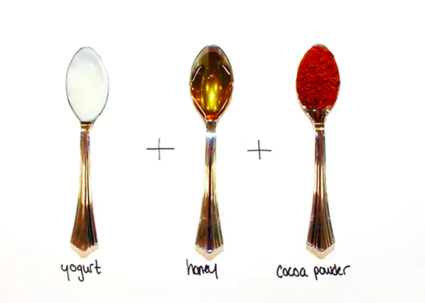

self care
bringing you wellness tips for your everyday
8 Skin Transforming DIY Face Mask Recipes
by: FIORELLA OTINIANO | April 24, 2021
If you know what you're doing — and that can be a fairly huge if — then your refrigerator can stock some pretty impressive skin-care recipes. After all, just think about all of the nourishing vitamins and minerals found in fruit and vegetables. Let's see: There's vitamin C in lemons and oranges, vitamins E and A in avocados, calcium and potassium in bananas... you get the picture. Knowing this, we took the liberty of perusing the produce section and talking to skin-care experts, who kindly helped us come up with some seriously awesome recipe ideas for face masks. No matter what your skin-care concern, we've got you covered.
Ahead, find eight dermatologist-approved concoctions that your skin (and your nose) will love.
| diy face mask | face type | ingredients | image | choose your preferred mask and apply once a week |
|---|---|---|---|---|
| nikes | for acne prone skin | 1 banana, 1/2tsp baking soda, 1/2tsp turmeric powder | ||
| seigried | for blemished skin | 1 butternut squash, 1tbsp honey, 2 drops tea-tree oil | ||
| nights | for dry skin | 1 avocado, 2tbsp yogurt, 1tbsp olive oil, 1 tbsp honey | ||
| pink + white | for dull skin | 1/2 cup of papaya, 1tsp honey, 1 whipped egg white | ||
| pretty sweet | for rough skin | 1/2 cucumber, 1/4 cup milk, 1tbsp honey, 1tbsp brown sugar | ||
| solo | for tired skin | juice of 1 lemon, 2tbsp sugar, 1 tbsp olive oil | ||
| self control | for sensitive skin | 1 tbsp yogurt, 1tsp honey, 1tsp cocoa powder |  | |
| ivy | for oily skin | 1/2 cup cooked oatmeal, 1 egg, 1tbsp lemon juice |